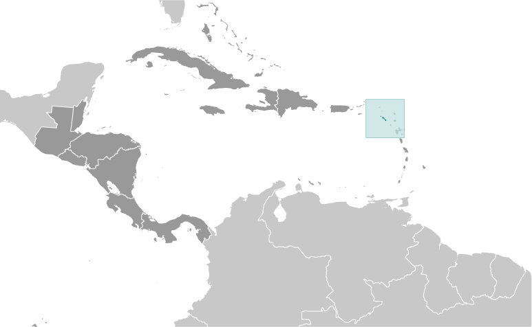
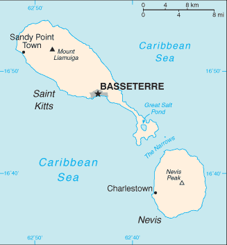
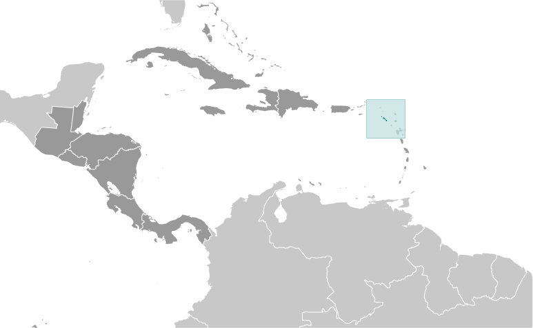
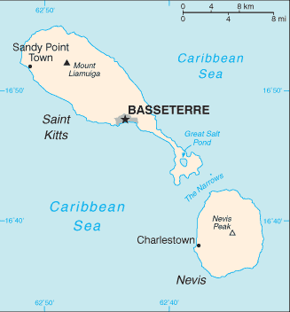

Central America and Caribbean :: SAINT KITTS AND NEVIS
Introduction :: SAINT KITTS AND NEVIS
-
Carib Indians occupied the islands of the West Indies for hundreds of years before the British began settlement in 1623. In 1967, the island territory of Saint Christopher-Nevis-Anguilla became an associated state of the UK with full internal autonomy. The island of Anguilla rebelled and was allowed to secede in 1971. The remaining islands achieved independence in 1983 as Saint Kitts and Nevis. In 1998, a referendum on Nevis to separate from Saint Kitts fell short of the two-thirds majority vote needed. Nevis continues in its efforts to separate from Saint Kitts.
Geography :: SAINT KITTS AND NEVIS
-
Caribbean, islands in the Caribbean Sea, about one-third of the way from Puerto Rico to Trinidad and Tobago17 20 N, 62 45 WCentral America and the Caribbeantotal: 261 sq km (Saint Kitts 168 sq km; Nevis 93 sq km)land: 261 sq kmwater: 0 sq kmcountry comparison to the world: 2121.5 times the size of Washington, DC0 km135 kmterritorial sea: 12 nmcontiguous zone: 24 nmexclusive economic zone: 200 nmcontinental shelf: 200 nm or to the edge of the continental margintropical, tempered by constant sea breezes; little seasonal temperature variation; rainy season (May to November)volcanic with mountainous interiorsmean elevation: NAelevation extremes: lowest point: Caribbean Sea 0 mhighest point: Mount Liamuiga 1,156 marable landagricultural land: 23.1%arable land 19.2%; permanent crops 0.4%; permanent pasture 3.5%forest: 42.3%other: 34.6% (2011 est.)8 sq km (2012)population clusters are found in the small towns located on the periphery of both islandshurricanes (July to October)volcanism: Mount Liamuiga (1,156 m) on Saint Kitts, and Nevis Peak (985 m) on Nevis, are both volcanoes that are part of the volcanic island arc of the Lesser Antilles, which extends from Saba in the north to Grenada in the southdeforestation; soil erosion and silting affects marine life on coral reefs; water pollution from uncontrolled dumping of sewageparty to: Biodiversity, Climate Change, Climate Change-Kyoto Protocol, Desertification, Endangered Species, Hazardous Wastes, Law of the Sea, Marine Dumping, Ozone Layer Protection, Ship Pollution, Whalingsigned, but not ratified: none of the selected agreementssmallest country in the Americas and Western Hemisphere; with coastlines in the shape of a baseball bat and ball, the two volcanic islands are separated by a 3-km-wide channel called The Narrows; on the southern tip of long, baseball bat-shaped Saint Kitts lies the Great Salt Pond; Nevis Peak sits in the center of its almost circular namesake island and its ball shape complements that of its sister island
People and Society :: SAINT KITTS AND NEVIS
-
52,715 (July 2017 est.)country comparison to the world: 207noun: Kittitian(s), Nevisian(s)adjective: Kittitian, Nevisianpredominantly black; some British, Portuguese, and LebaneseEnglish (official)Anglican, other Protestant, Roman Catholic0-14 years: 20.32% (male 5,378/female 5,332)15-24 years: 14.54% (male 3,689/female 3,978)25-54 years: 44.6% (male 12,070/female 11,441)55-64 years: 11.9% (male 3,130/female 3,142)65 years and over: 8.64% (male 2,107/female 2,448) (2017 est.)total: 35 yearsmale: 35.2 yearsfemale: 34.8 years (2017 est.)country comparison to the world: 820.73% (2017 est.)country comparison to the world: 14013.2 births/1,000 population (2017 est.)country comparison to the world: 1477.1 deaths/1,000 population (2017 est.)country comparison to the world: 1291.2 migrant(s)/1,000 population (2017 est.)country comparison to the world: 56population clusters are found in the small towns located on the periphery of both islandsurban population: 32.3% of total population (2017)rate of urbanization: 1.42% annual rate of change (2015-20 est.)BASSETERRE (capital) 14,000 (2014)at birth: 1.02 male(s)/female0-14 years: 1.01 male(s)/female15-24 years: 0.94 male(s)/female25-54 years: 1.05 male(s)/female55-64 years: 1 male(s)/female65 years and over: 0.83 male(s)/femaletotal population: 1 male(s)/female (2016 est.)total: 8.4 deaths/1,000 live birthsmale: 5.9 deaths/1,000 live birthsfemale: 10.9 deaths/1,000 live births (2017 est.)country comparison to the world: 151total population: 75.9 yearsmale: 73.5 yearsfemale: 78.4 years (2017 est.)country comparison to the world: 951.77 children born/woman (2017 est.)country comparison to the world: 1575.1% of GDP (2014)country comparison to the world: 1372.3 beds/1,000 population (2012)improved:urban: 98.3% of populationrural: 98.3% of populationtotal: 98.3% of populationunimproved:urban: 1.7% of populationrural: 1.7% of populationtotal: 1.7% of population (2015 est.)improved:urban: 87.3% of populationrural: 87.3% of populationtotal: 87.3% of populationunimproved:urban: 12.7% of populationrural: 12.7% of populationtotal: 12.7% of population (2007 est.)NANANA22.9% (2016)country comparison to the world: 714.2% of GDP (2007)country comparison to the world: 105total: 14 yearsmale: 13 yearsfemale: 16 years (2015)
Government :: SAINT KITTS AND NEVIS
-
conventional long form: Federation of Saint Kitts and Nevisconventional short form: Saint Kitts and Nevisformer: Federation of Saint Christopher and Nevisetymology: Saint Kitts was, and still is, referred to as Saint Christopher and this name was well established by the 17th century (although who first applied the name is unclear); in the 17th century a common nickname for Christopher was Kit or Kitt, so the island began to be referred to as "Saint Kitt's Island" or just "Saint Kitts"; Nevis is derived from the original Spanish name "Nuestra Senora de las Nieves" (Our Lady of the Snows) and refers to the white halo of clouds that generally wreathes Nevis Peakfederal parliamentary democracy (National Assembly) under a constitutional monarchy; a Commonwealth realmname: Basseterregeographic coordinates: 17 18 N, 62 43 Wtime difference: UTC-4 (1 hour ahead of Washington, DC, during Standard Time)14 parishes; Christ Church Nichola Town, Saint Anne Sandy Point, Saint George Basseterre, Saint George Gingerland, Saint James Windward, Saint John Capesterre, Saint John Figtree, Saint Mary Cayon, Saint Paul Capesterre, Saint Paul Charlestown, Saint Peter Basseterre, Saint Thomas Lowland, Saint Thomas Middle Island, Trinity Palmetto Point19 September 1983 (from the UK)Independence Day, 19 September (1983)several previous (preindependence); latest presented 22 June 1983, effective 23 June 1983 (2016)English common lawhas not submitted an ICJ jurisdiction declaration; accepts ICCt jurisdictioncitizenship by birth: yescitizenship by descent: yesdual citizenship recognized: yesresidency requirement for naturalization: 14 years18 years of age; universalchief of state: Queen ELIZABETH II (since 6 February 1952); represented by Governor General Samuel W.T. SEATON (since 2 September 2015); note - SEATON was acting Governor General from 20 May to 2 September 2015head of government: Prime Minister Timothy HARRIS (since 18 February 2015); Deputy Prime Minister Shawn RICHARDS (since 22 February 2015)cabinet: Cabinet appointed by governor general in consultation with prime ministerelections/appointments: the monarchy is hereditary; governor general appointed by the monarch; following legislative elections, the leader of the majority party or majority coalition usually appointed prime minister by governor general; deputy prime minister appointed by governor generaldescription: unicameral National Assembly (14 seats; 11 members directly elected in single-seat constituencies by simple majority vote and 3 appointed by the governor general; members serve 5-year terms)elections: last held on 16 February 2015 (next to be held by 2020)election results: percent of vote by party - SKNLP 39.3%, PAM 27.9% CCM 13.0% NRP 10.8%, PLP 9.0%; seats by party - PAM 4, SKNLP 3, CCM 2, NRP 1, PLP 1highest court(s): the Eastern Caribbean Supreme Court (ECSC) is the superior court of the Organization of Eastern Caribbean States; the ECSC - headquartered on St. Lucia - consists of the Court of Appeal - headed by the chief justice and 4 judges - and the High Court with 18 judges; the Court of Appeal is itinerant, travelling to member states on a schedule to hear appeals from the High Court and subordinate courts; High Court judges reside at the member states with 2 assigned to Saint Kitts and Nevis; note - the ECSC in 2003 replaced the Judicial Committee of the Privy Council in London as the final court of appeal on Saint Kitts and Nevis; Saint Kitts and Nevis is also a member of the Caribbean Court of Justicejudge selection and term of office: chief justice of Eastern Caribbean Supreme Court appointed by Her Majesty, Queen ELIZABETH II; other justices and judges appointed by the Judicial and Legal Services Commission, an independent body of judicial officials; Court of Appeal justices appointed for life with mandatory retirement at age 65; High Court judges appointed for life with mandatory retirement at age 62subordinate courts: magistrates' courtsConcerned Citizens Movement or CCM [Mark BRANTLEY]Nevis Reformation Party or NRP [Joseph PARRY]People's Action Movement or PAM [Shawn RICHARDS]People's Labour Party or PLP [Dr. Timothy HARRIS]Saint Kitts and Nevis Labor Party or SKNLP [Dr. Denzil DOUGLAS]NAACP, AOSIS, C, Caricom, CDB, CELAC, FAO, G-77, IBRD, ICAO, ICCt, ICRM, IDA, IFAD, IFC, IFRCS, ILO, IMF, IMO, Interpol, IOC, ITU, MIGA, OAS, OECS, OPANAL, OPCW, Petrocaribe, UN, UNCTAD, UNESCO, UNIDO, UPU, WHO, WIPO, WTOchief of mission: Ambassador Dr. Thelma Patricia PHILLIP-BROWNE (since 28 January 2016)chancery: 3216 New Mexico Avenue NW, Washington, DC 20016telephone: [1] (202) 686-2636FAX: [1] (202) 686-5740consulate(s) general: Los Angeles, New Yorkthe US does not have an embassy in Saint Kitts and Nevis; the US Ambassador to Barbados is accredited to Saint Kitts and Nevisdivided diagonally from the lower hoist side by a broad black band bearing two white, five-pointed stars; the black band is edged in yellow; the upper triangle is green, the lower triangle is red; green signifies the island's fertility, red symbolizes the struggles of the people from slavery, yellow denotes year-round sunshine, and black represents the African heritage of the people; the white stars stand for the islands of Saint Kitts and Nevis, but can also express hope and liberty, or independence and optimismbrown pelican, Royal Poinciana (Flamboyant) tree; national colors: green, yellow, red, black, whitename: "Oh Land of Beauty!"lyrics/music: Kenrick Anderson GEORGESnote: adopted 1983
Economy :: SAINT KITTS AND NEVIS
-
The economy of Saint Kitts and Nevis depends on tourism; since the 1970s, tourism has replaced sugar as the economy’s traditional mainstay. Roughly 200,000 tourists visited the islands in 2009, but reduced tourism arrivals and foreign investment led to an economic contraction in the 2009-2013 period, and the economy returned to growth only in 2014. Like other tourist destinations in the Caribbean, Saint Kitts and Nevis is vulnerable to damage from natural disasters and shifts in tourism demand.Following the 2005 harvest, the government closed the sugar industry after several decades of losses. To compensate for lost jobs, the government has embarked on a program to diversify the agricultural sector and to stimulate other sectors of the economy, such as export-oriented manufacturing and offshore banking. The government has made notable progress in reducing its public debt, from 154% of GDP in 2011 to 83% in 2013, although it still faces one of the highest levels in the world, largely attributable to public enterprise losses. Saint Kitts and Nevis is among other countries in the Caribbean that supplement their economic activity through economic citizenship programs, whereby foreigners can obtain citizenship from Saint Kitts and Nevis by investing there.$1.463 billion (2016 est.)$1.4 billion (2015 est.)$1.321 billion (2014 est.)note: data are in 2016 dollarscountry comparison to the world: 199$900 million (2016 est.)3.1% (2016 est.)4.9% (2015 est.)5.1% (2014 est.)country comparison to the world: 98$26,100 (2016 est.)$25,300 (2015 est.)$24,600 (2014 est.)note: data are in 2016 dollarscountry comparison to the world: 7318.6% of GDP (2016 est.)16.5% of GDP (2015 est.)20.8% of GDP (2014 est.)country comparison to the world: 124household consumption: 59.4%government consumption: 20.3%investment in fixed capital: 29.6%investment in inventories: 0%exports of goods and services: 31.9%imports of goods and services: -41.2% (2016 est.)agriculture: 1.1%industry: 29%services: 69.9% (2016 est.)sugarcane, rice, yams, vegetables, bananas; fishtourism, cotton, salt, copra, clothing, footwear, beverages6% (2016 est.)country comparison to the world: 3518,170 (June 1995 est.)country comparison to the world: 2134.5% (1997)country comparison to the world: 59NA%lowest 10%: NA%highest 10%: NA%revenues: $370.4 millionexpenditures: $333.3 million (2016 est.)41% of GDP (2016 est.)country comparison to the world: 344.1% of GDP (2016 est.)country comparison to the world: 965.8% of GDP (2016 est.)70.6% of GDP (2015 est.)country comparison to the world: 57calendar year-0.4% (2016 est.)-2.3% (2015 est.)country comparison to the world: 226.5% (31 December 2009)6.5% (31 December 2008)country comparison to the world: 639.24% (31 December 2016 est.)9.3% (31 December 2015 est.)country comparison to the world: 88$210.1 million (31 December 2016 est.)$231.2 million (31 December 2015 est.)country comparison to the world: 183$1.077 billion (31 December 2016 est.)$1.121 billion (31 December 2015 est.)country comparison to the world: 172$704.8 million (31 December 2016 est.)$728.1 million (31 December 2015 est.)country comparison to the world: 171$598.4 million (31 December 2011)$598.4 million (31 December 2011 est.)country comparison to the world: 112$-102 million (2016 est.)$-86.1 million (2015 est.)country comparison to the world: 70$53.9 million (2016 est.)$55.3 million (2015 est.)country comparison to the world: 201machinery, food, electronics, beverages, tobaccoUS 49.6%, Poland 15.2%, Turkey 11.6% (2016)$244.4 million (2016 est.)$247 million (2015 est.)country comparison to the world: 204machinery, manufactures, food, fuelsUS 56.8%, Trinidad and Tobago 6.8%, Cyprus 6.2%, Japan 4% (2016)$187.9 million (31 December 2016 est.)$168 million (31 December 2015 est.)country comparison to the world: 189East Caribbean dollars (XCD) per US dollar -2.7 (2016 est.)2.7 (2015 est.)2.7 (2014 est.)2.7 (2013 est.)2.7 (2012 est.)
Energy :: SAINT KITTS AND NEVIS
-
population without electricity: 5,232electrification - total population: 91%electrification - urban areas: 100%electrification - rural areas: 80% (2012)208 million kWh (2015 est.)country comparison to the world: 188193.4 million kWh (2015 est.)country comparison to the world: 1900 kWh (2016 est.)country comparison to the world: 1920 kWh (2016 est.)country comparison to the world: 19663,200 kW (2015 est.)country comparison to the world: 18894.9% of total installed capacity (2015 est.)country comparison to the world: 550% of total installed capacity (2015 est.)country comparison to the world: 1770% of total installed capacity (2015 est.)country comparison to the world: 2006.6% of total installed capacity (2015 est.)country comparison to the world: 850 bbl/day (2016 est.)country comparison to the world: 1890 bbl/day (2014 est.)country comparison to the world: 1840 bbl/day (2014 est.)country comparison to the world: 1850 bbl (1 January 2017 es)country comparison to the world: 1870 bbl/day (2014 est.)country comparison to the world: 1931,900 bbl/day (2015 est.)country comparison to the world: 1950 bbl/day (2014 est.)country comparison to the world: 1941,907 bbl/day (2014 est.)country comparison to the world: 1890 cu m (2013 est.)country comparison to the world: 1900 cu m (2013 est.)country comparison to the world: 1270 cu m (2013 est.)country comparison to the world: 1760 cu m (2013 est.)country comparison to the world: 1830 cu m (1 January 2014 es)country comparison to the world: 190300,000 Mt (2013 est.)country comparison to the world: 191
Communications :: SAINT KITTS AND NEVIS
-
total subscriptions: 17,433subscriptions per 100 inhabitants: 33 (July 2016 est.)country comparison to the world: 185total: 76,583subscriptions per 100 inhabitants: 146 (July 2016 est.)country comparison to the world: 196general assessment: good interisland and international connectionsdomestic: interisland links via ECFS; construction of enhanced wireless infrastructure launched in November 2004; fixed-line teledensity about 30 per 100 persons; mobile-cellular teledensity is roughly 145 per 100 personsinternational: country code - 1-869; connected internationally by the East ECFS and Southern Caribbean Fiber submarine cables (2016)the government operates a national TV network that broadcasts on 2 channels; cable subscription services provide access to local and international channels; the government operates a national radio network; a mix of government-owned and privately owned broadcasters operate roughly 15 radio stations (2007).kntotal: 39,000percent of population: 75.7% (July 2016 est.)country comparison to the world: 203
Transportation :: SAINT KITTS AND NEVIS
-
V4 (2016)2 (2013)country comparison to the world: 209total: 21,524 to 2,437 m: 1914 to 1,523 m: 1 (2017)total: 50 kmnarrow gauge: 50 km 0.762-m gauge on Saint Kitts for tourists (2008)country comparison to the world: 132total: 383 kmpaved: 163 kmunpaved: 220 km (2002)country comparison to the world: 202total: 152by type: bulk carrier 16, cargo 81, chemical tanker 4, combination ore/oil 1, container 2, liquefied gas 3, passenger 2, passenger/cargo 7, petroleum tanker 27, refrigerated cargo 4, roll on/roll off 4, specialized tanker 1foreign-owned: 73 (Belgium 1, China 1, Egypt 1, Greece 2, India 2, Japan 2, Malaysia 1, Norway 3, Pakistan 1, Russia 13, Singapore 10, Turkey 18, UAE 8, UK 1, Ukraine 8, US 1) (2010)country comparison to the world: 39major seaport(s): Basseterre, Charlestown
Military and Security :: SAINT KITTS AND NEVIS
-
Ministry of Foreign Affairs, National Security, Labour, Immigration, and Social Security: Royal Saint Kitts and Nevis Defense Force (includes Coast Guard), Royal Saint Kitts and Nevis Police Force (2013)18 years of age for voluntary military service; no conscription (2012)
Transnational Issues :: SAINT KITTS AND NEVIS
-
joins other Caribbean states to counter Venezuela's claim that Aves Island sustains human habitation, a criterion under UN Convention on the Law of the Sea, which permits Venezuela to extend its EEZ/continental shelf over a large portion of the eastern Caribbean Seatransshipment point for South American drugs destined for the US and Europe; some money-laundering activity